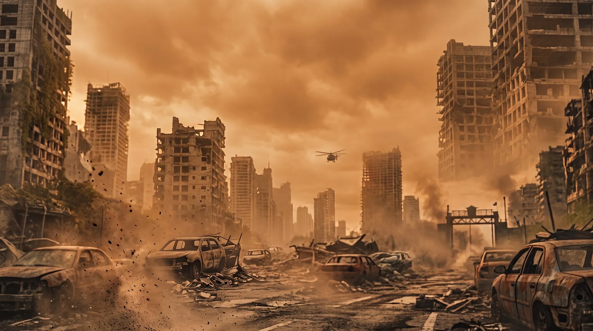

AAA Extraction Game
Designed and implemented core content for a key gameplay pillar, seamlessly adapting a globally recognized IP into a high-stakes extraction shooter experience.
At a Glance
Narrative and content design for the game's social hub: the people who live in it, what they say, and the missions that push the player back out into the map.
- Studio: Saber Latam, formerly Nimble Giant Entertainment.
- Role: Game Designer, focused on narrative and content.
- Scope: Hub cast and their Modules, branching conversations, ambient barks and mission content.
- Engine: Unreal Engine 5, inside an AAA production pipeline.

Working with a globally recognized IP
Working with a globally recognized IP meant constantly balancing deep respect for established lore with the need for engaging mechanics. Every piece of designed content had to feel authentic to the universe while perfectly serving the high-stakes loops of an extraction shooter. It was a rigorous but deeply rewarding process of translating iconic elements into a seamless AAA player experience.
What I did
- Wrote and implemented branching conversations, reactive barks, and dynamic dialogue systems.
- Designed narrative-driven missions that organically integrated the IP's rich lore into the player's progression.
Impact on Gameplay
Transformed the central HUB into a living, breathing space that grounded the high-tension extraction gameplay. By giving each NPC a distinct voice and meaningful arcs, player downtime became a highly immersive experience that deepened their connection to the recognized universe and provided compelling context for their missions.
A cast that had to hold up on the tenth visit
The hub is where players land between runs, so the same faces come back over and over. The risk was obvious: a room full of vending machines with names. Each NPC needed a reason to exist beyond the service they provide.
How I approached the cast
- Started from the character backgrounds I was handed and used them as a sandbox. The foundations were fixed; the voice, the priorities, what each one wants and what they never say out loud were mine to build.
- Kept them readable at a glance through distinct speech patterns, distinct attitudes toward the player, and distinct stakes in what is happening outside the hub.
- Spread the lore across the cast instead of concentrating it, so no single conversation had to carry the whole setting on its back.
- Wrote for repetition, not for the first impression: content that still lands when the player has heard the neighbouring lines a dozen times.
Why it mattered
Players started recognizing NPCs by voice and attitude rather than by the icon over their head. The hub stopped reading as a loadout screen with decoration and started reading as a place, which is what makes the tension of leaving it work.
Conversations, barks and the tone in between
These are three very different registers and they fail in different ways. A branching conversation carries intent; a bark carries mood and has to survive being heard fifty times. Most of the craft was in matching the register to the moment.
What the content covers
- Branching conversations with reactive states, so what an NPC says depends on where the player is in their progression.
- Ambient barks tied to hub state, reacting to mission progress and to what the player just did.
- A line-level pass on length and rhythm: hub dialogue competes with a player who wants to get back into a run, so anything that could be cut was cut.
- Authoring inside the dialogue system itself, conditions included, so writing a line and wiring it up were the same task rather than two handoffs.
Impact on Gameplay
The hub gained texture without gaining friction. Players who wanted to read got depth; players who wanted to gear up and leave were never held hostage by it.
Modules: progression you can walk through
The hub was built out of Modules: a cluster of NPCs and the space they occupy, upgraded over the course of the game. A medic and the Medbay around them are the same design problem, so I designed both arcs together: the narrative one and the visual one.
What designing a Module involved
- Mapped each Module's narrative arc across its upgrade tiers: what the NPC wants when the player first meets them, what changes once they have been backed, and what that opens up in their dialogue.
- Tied that arc to the visual progression of the space, so a Medbay that has been invested in reads as one before anybody says a word about it.
- Kept every tier coherent on its own, since plenty of players stop halfway: each step had to look and sound like a finished state, not an unfinished one.
- Worked with environment and systems so that the fiction of a tier, its cost and what it actually gives back all pointed at the same thing.
Why it mattered
Progression stopped being a number on a screen. Upgrading a Module changed what the player saw and what they heard, so the hub ended up carrying a visible record of everything they had chosen to invest in.
From the hub to the run
The hardest part was not writing the hub. It was making the hub lead somewhere. A mission had to start as a conversation and end as a reason to walk back in.
Connecting both halves
- Built missions that begin with an NPC's problem and resolve inside the extraction loop, so the narrative framing and the moment-to-moment gameplay push in the same direction.
- Used mission state to change what the hub says: the cast reacts to what the player brought back, what they lost, and who they helped along the way.
- Kept the handoff short. The hub sets intent in a few lines and the run carries it from there.
- Worked alongside systems, level and audio to keep the content ambitious in intent and realistic in scope.
Result
The loop closes: the hub gives the run a reason, and the run gives the hub something new to say. Downtime became part of the pacing instead of a pause in it, which is exactly what an extraction game needs between the moments of risk.